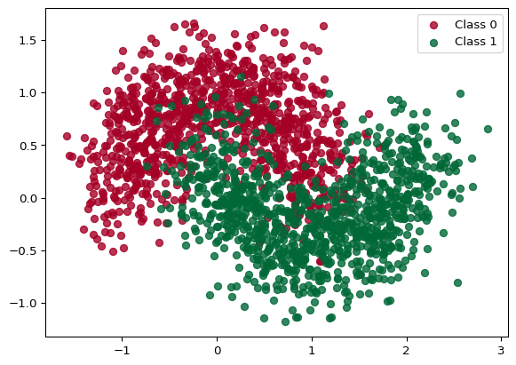
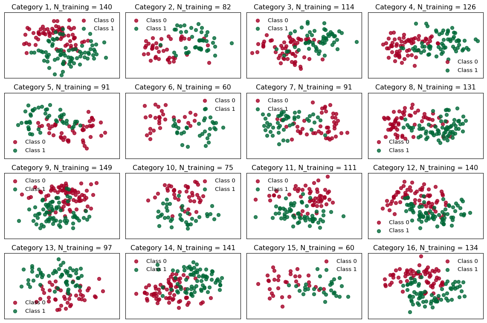
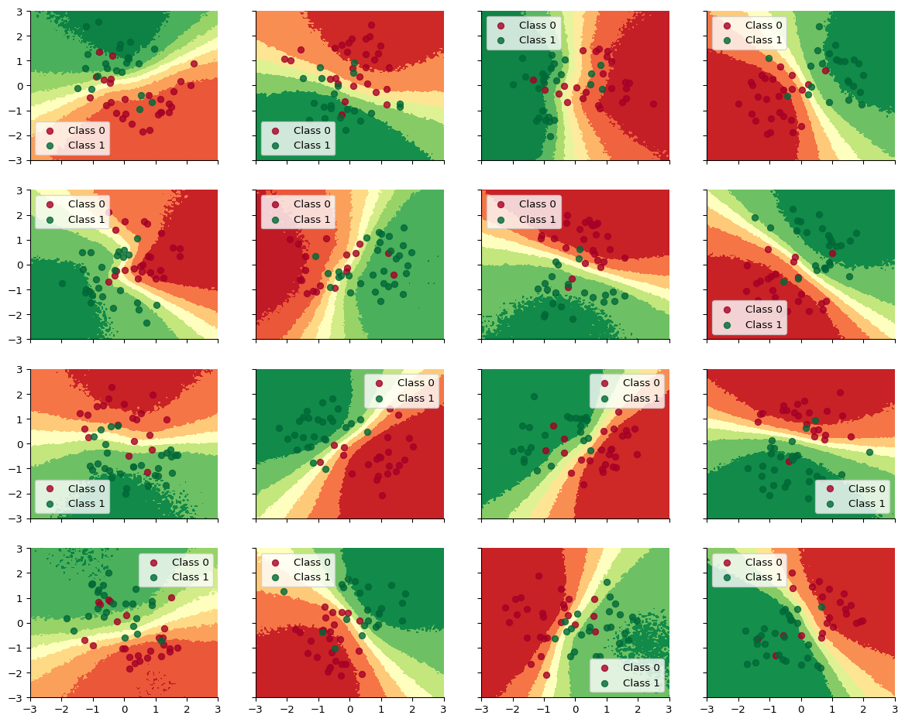
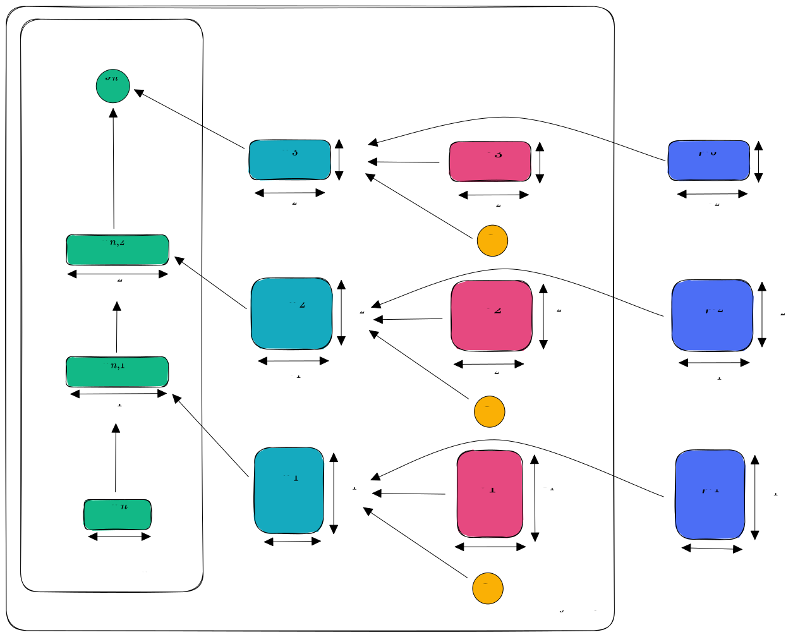
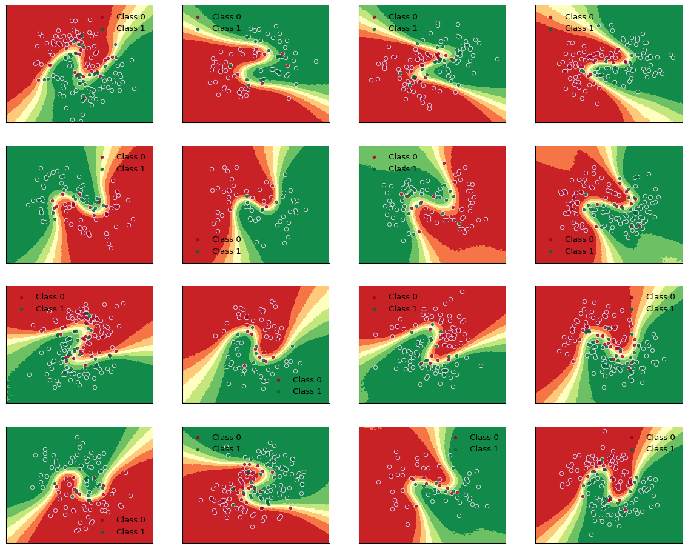

![]()
from typing import Tuple
from datetime import date
from functools import partial
from warnings import filterwarnings
import jax
import jax.random as jr
import jax.numpy as jnp
import equinox as eqx
import numpy as np
import matplotlib as mpl
import matplotlib.pyplot as plt
from sklearn.datasets import make_moons
from sklearn.preprocessing import scale
import blackjax
import tensorflow_probability.substrates.jax.distributions as tfd
from sklearn.model_selection import train_test_split
filterwarnings("ignore")
key = jr.key(int(date.today().strftime("%Y%m%d")))
cmap = mpl.colormaps["RdYlGn"]Bayesian Modeling is a very suitable choice if you want to obtain the uncertainty associated with the predictions of a model. Here, typically a Markov Chain Monte Carlo estimator is used, which explores any stationary distribution and recovers (asymptotically) consistent estimators and thus those samplers are of primary interest, because we can essentially (re-)construct any distribution. This can also be the joint distribution of the weights of a Neural Network! This could be incredibly promising, since we can combine the powers from statistical modeling techniques with the of universal function approximation from Neural Networks. To this end, there are recent voices arguing why Bayesian Deep Learning is a promising avenue.
In Bayesian Modeling, Hierarchical Bayesian Modeling is a special kind of model specification, helping the sampler to expore the distribution of interest. It is in fact so powerful that once you know about it, you can’t unsee applications of it (primarily in the Sciences). Hierarchical Modeling can be used if you have some grouped structure in your dataset, e.g. if products can be assigned to clusters that share some properties. More on this technique in Section 2.
There are some very useful blog entries and notebooks out there (e.g. by Thomas Wiecki using Theano and PyMC3 and this repo using a more recent version of JAX). However, those examples only work with the critical assumption that the group sizes are all of the same size. In reality, this is rarely the case, of course.
Here, I will show you how you can implement a Hierarchical Bayesian Neural Network irrespective of the group sizes you observe in your dataset.
The notebook is structured as follows:
- ✍️ Create a dataset: Binary classification with unequal observations per group
- 🧠 What’s the modelling approach and why does it work?
- 👾 Code the model
- 🚀 Run the model and evaluate
1 Setup and dummy data generation
Let’s first import the libraries we’ll need:
Thoughout the notebook, we’ll use the standard two-moons dataset, being a binary classification problem. Figure 1 shows how the dataset looks with some training examples.
noise = 0.3
X, Y = make_moons(noise=noise, n_samples=2000)
for i in range(2):
plt.scatter(X[Y == i, 0], X[Y == i, 1], color=cmap(float(i)), label=f"Class {i}", alpha=0.8)
plt.legend()
plt.show()

Next, let’s choose some values for the data generation of our grouped dataset. We’ll create several groups with a random number of samples, choose some settings for our Neural Network implementation and set two parameters for the MCMC-Algorithm: the number of ‘warmup’ samples (which will be discarded after the model fitting finished) and the number of sampling steps.
# Data
n_groups = 16
n_grps_sq = int(np.sqrt(n_groups))
n_samples = np.random.randint(10, 200, size=n_groups)
# MLP params
data_dim = 2
hidden_layer_width = 8
n_hidden_layers = 3
# Sampling
num_warmup = 1000
num_samples = 2000We then write a function which rotates the dataset in the 2-D space a bit and generate the datasets, store them in lists:
def rotate(X, deg):
theta = np.radians(deg)
c, s = np.cos(theta), np.sin(theta)
R = np.matrix([[c, -s], [s, c]])
X = X.dot(R)
return np.asarray(X)
np.random.seed(31)
Xs, Ys, gs = [], [], []
Xs_train, Ys_train, gs_train, Xs_test, Ys_test, gs_test = [], [], [], [], [], []
for i in range(n_groups):
# Generate data with 2 classes that are not linearly separable
X, Y = make_moons(noise=noise, n_samples=n_samples[i])
X = scale(X)
# Rotate the points randomly for each category
rotate_by = np.random.randn() * 90.0
X = rotate(X, rotate_by)
Xs.append(X)
Ys.append(Y)
gs.append(X.shape[0])
X_train, X_test, Y_train, Y_test = train_test_split(X, Y, test_size=0.2, random_state=31)
Xs_train.append(X_train)
Ys_train.append(Y_train)
gs_train.append(X_train.shape[0])
Xs_test.append(X_test)
Ys_test.append(Y_test)
gs_test.append(X_test.shape[0])Next, we pad the entries in our list of datasets such that all the entries have the same shape: the shape of the largest dataset. We also create a mask, marking the elements of the entries which were padded. Padding works here, because we can disregard the masked positions in our datasets in the loglikelihood function.
def pad_arrays(arrays, fill_value):
max_size = max(array.shape[0] for array in arrays)
padded_arrays = []
for array in arrays:
if array.ndim == 1:
padding = (0, max_size - array.shape[0])
padded_array = jnp.pad(array, padding, mode="constant", constant_values=fill_value)
padded_arrays.append(padded_array[:, np.newaxis])
else:
padding = ((0, max_size - array.shape[0]), (0, 0))
padded_array = jnp.pad(array, padding, mode="constant", constant_values=fill_value)
padded_arrays.append(padded_array)
return padded_arrays
# Stack group arrays and create a mask
fill_value = 1e5
Xs_train = jnp.stack(pad_arrays(Xs_train, fill_value))
Ys_train = jnp.stack(pad_arrays(Ys_train, fill_value)).squeeze(axis=2)
Xs_test = jnp.stack(pad_arrays(Xs_test, fill_value))
Ys_test = jnp.stack(pad_arrays(Ys_test, fill_value)).squeeze(axis=2)
mask_train = jnp.where(Xs_train == fill_value, fill_value, 1)
mask_test = jnp.where(Xs_test == fill_value, fill_value, 1)In Figure 2 you can see how the datasets look and how many entries the individual groups got:
# utility function for plotting
def closest_factors(n):
a, b = 1, n
for i in range(1, int(n**0.5) + 1):
if n % i == 0:
a, b = i, n // i
return a, b
# Number of rows and columns for subplots
n_cols, n_rows = closest_factors(n_groups)
fig, axes = plt.subplots(n_rows, n_cols, figsize=(n_cols*3, n_rows*2), sharex=True, sharey=True)
# Flatten axes array for easy iteration
axes = axes.flatten()
for i, (X, Y, group_size, ax) in enumerate(zip(Xs_train, Ys_train, gs_train, axes)):
for c in range(2):
ax.scatter(X[Y == c, 0], X[Y == c, 1], color=cmap(float(c)), label=f"Class {c}", alpha=0.8)
ax.set_xticks([])
ax.set_yticks([])
ax.legend(frameon=False)
ax.set(title=f"Category {i + 1}, N_training = {group_size}")
# Hide any unused subplots
for j in range(n_groups, len(axes)):
fig.delaxes(axes[j])
plt.tight_layout()
plt.show()

2 A Bayesian Hierarchical Neural Network
Now, let’s dig into why modeling this dataset with a hierarchical Neural Network might make sense. Beware: we’ll use some vocabulary from statistical modeling.
The prominent probabilistic modeler Michael Betancourt provides an in depth introduction to the foundations of hierarchical modeling. Conceptually, hierarchical modeling is an approach if there is a latent population that we can couple context-dependent parameters to. In our dataset, we assume there is some homogeneous structure withtin the groups, whereas the groups may be different between them. This means that we can actually share the weights of the group’s individual Neural Networks across all networks, because the task (binary classification with some Z-shape) is similar; even though the individual groups are all oriented differently in the 2-D space (difference between the groups).
When does a Hierarchical Bayesian Neural Network make the most sense?
Summarizing, a HBNN requires that:
- you can make use of a grouping structure in your dataset
- the data generating process of the individual groups is similar
It is the strongest, if you have a small-ish number of observations (probably in relation to the difficulty of the learning task?), since in this case ‘traditional’ approaches will fail (see Tip 1).
Tip 1: Recap: Running a separate model per group (example from the Blackjax Sampling book)
Since it’s covered in the HBNN-tutorial from the BlackJax Sampling Book, I will just copy-paste the code here for reference and the curious (and because I don’t want to loose this example if the Sampling Book disappears at some point).
The key takeaway is this: If you fit the models separately, there will be not enough training examples for the Neural Network to capture the nonlinear relationship separating the two classes.
import matplotlib.pyplot as plt
import jax
from datetime import date
from functools import partial
from warnings import filterwarnings
from flax import linen as nn
from flax.linen.initializers import ones
import jax.numpy as jnp
import numpy as np
import tensorflow_probability.substrates.jax.distributions as tfd
from sklearn.datasets import make_moons
from sklearn.preprocessing import scale
import blackjax
filterwarnings("ignore")
import matplotlib as mpl
plt.rcParams["axes.spines.right"] = False
plt.rcParams["axes.spines.top"] = False
rng_key = jax.random.key(int(date.today().strftime("%Y%m%d")))
n_groups_tut = 18
n_grps_sq_tut = int(np.sqrt(n_groups_tut))
n_samples_tut = 100
def rotate_tut(X, deg):
theta = np.radians(deg)
c, s = np.cos(theta), np.sin(theta)
R = np.matrix([[c, -s], [s, c]])
X = X.dot(R)
return np.asarray(X)
np.random.seed(31)
Xs_tut, Ys_tut = [], []
for i in range(n_groups_tut):
# Generate data with 2 classes that are not linearly separable
X, Y = make_moons(noise=0.3, n_samples=n_samples_tut)
X = scale(X)
# Rotate the points randomly for each category
rotate_by = np.random.randn() * 90.0
X = rotate_tut(X, rotate_by)
Xs_tut.append(X)
Ys_tut.append(Y)
Xs_tut = jnp.stack(Xs_tut)
Ys_tut = jnp.stack(Ys_tut)
Xs_tut_train = Xs_tut[:, : n_samples_tut // 2, :]
Xs_tut_test = Xs_tut[:, n_samples_tut // 2 :, :]
Ys_tut_train = Ys_tut[:, : n_samples_tut // 2]
Ys_tut_test = Ys_tut[:, n_samples_tut // 2 :]
grid = jnp.mgrid[-3:3:100j, -3:3:100j].reshape((2, -1)).T
grid_3d = jnp.repeat(grid[None, ...], n_groups_tut, axis=0)
def inference_loop_tut(rng_key, step_fn, initial_state, num_samples):
def one_step(state, rng_key):
state, _ = step_fn(rng_key, state)
return state, state
keys = jax.random.split(rng_key, num_samples)
_, states = jax.lax.scan(one_step, initial_state, keys)
return states
def get_predictions_tut(model, samples, X, rng_key):
vectorized_apply = jax.vmap(model.apply, in_axes=(0, None), out_axes=0)
z = vectorized_apply(samples, X)
predictions = tfd.Bernoulli(logits=z).sample(seed=rng_key)
return predictions.squeeze(-1)
def get_mean_predictions_tut(predictions, threshold=0.5):
# compute mean prediction and confidence interval around median
mean_prediction = jnp.mean(predictions, axis=0)
return mean_prediction > threshold
def fit_and_eval_tut(
rng_key,
model,
logdensity_fn,
X_train,
Y_train,
X_test,
grid,
n_groups=None,
num_warmup=1000,
num_samples=2000,
):
(
init_key,
warmup_key,
inference_key,
train_key,
test_key,
grid_key,
) = jax.random.split(rng_key, 6)
if n_groups is None:
initial_position = model.init(init_key, jnp.ones(X_train.shape[-1]))
else:
initial_position = model.init(init_key, jnp.ones(X_train.shape))
# initialization
logprob = partial(logdensity_fn, X=X_train, Y=Y_train, model=model)
# warm up
adapt = blackjax.window_adaptation(blackjax.nuts, logprob)
(final_state, params), _ = adapt.run(warmup_key, initial_position, num_warmup)
step_fn = blackjax.nuts(logprob, **params).step
# inference
states = inference_loop_tut(inference_key, step_fn, final_state, num_samples)
samples = states.position
# evaluation
predictions = get_predictions_tut(model, samples, X_train, train_key)
Y_pred_train = get_mean_predictions_tut(predictions)
predictions = get_predictions_tut(model, samples, X_test, test_key)
Y_pred_test = get_mean_predictions_tut(predictions)
pred_grid = get_predictions_tut(model, samples, grid, grid_key)
return Y_pred_train, Y_pred_test, pred_grid
# MLP params
hidden_layer_width_tut = 5
n_hidden_layers_tut = 2
class NN(nn.Module):
n_hidden_layers: int
layer_width: int
@nn.compact
def __call__(self, x):
for i in range(self.n_hidden_layers):
x = nn.Dense(features=self.layer_width)(x)
x = nn.tanh(x)
return nn.Dense(features=1)(x)
bnn = NN(n_hidden_layers_tut, hidden_layer_width_tut)
def logprior_fn_tut(params):
leaves, _ = jax.tree_util.tree_flatten(params)
flat_params = jnp.concatenate([jnp.ravel(a) for a in leaves])
return jnp.sum(tfd.Normal(0, 1).log_prob(flat_params))
def loglikelihood_fn_tut(params, X, Y, model):
logits = jnp.ravel(model.apply(params, X))
return jnp.sum(tfd.Bernoulli(logits).log_prob(Y))
def logdensity_fn_of_bnn_tut(params, X, Y, model):
return logprior_fn_tut(params) + loglikelihood_fn_tut(params, X, Y, model)
rng_key, eval_key = jax.random.split(rng_key)
keys = jax.random.split(eval_key, n_groups_tut)
def fit_and_eval_single_mlp_tut(key, X_train, Y_train, X_test):
return fit_and_eval_tut(
key, bnn, logdensity_fn_of_bnn_tut, X_train, Y_train, X_test, grid, n_groups=None
)
Ys_pred_train, Ys_pred_test, ppc_grid_single = jax.vmap(fit_and_eval_single_mlp_tut)(
keys, Xs_tut_train, Ys_tut_train, Xs_tut_test
)
def plot_decision_surfaces_non_hierarchical_tut(nrows=2, ncols=2):
fig, axes = plt.subplots(
figsize=(15, 12), nrows=nrows, ncols=ncols, sharex=True, sharey=True
)
axes = axes.flatten()
for i, (X, Y_pred, Y_true, ax) in enumerate(
zip(Xs_tut_train, Ys_pred_train, Ys_tut_train, axes)
):
ax.contourf(
grid[:, 0].reshape(100, 100),
grid[:, 1].reshape(100, 100),
ppc_grid_single[i, ...].mean(axis=0).reshape(100, 100),
cmap=cmap,
)
for i in range(2):
ax.scatter(
X[Y_true == i, 0], X[Y_true == i, 1],
color=cmap(float(i)), label=f"Class {i}", alpha=.8)
ax.legend()
plot_decision_surfaces_non_hierarchical_tut(nrows=n_grps_sq_tut, ncols=n_grps_sq_tut)
3 Coding the model
Now we’re ready for the modeling code. To get an overview of the model we we’re about to create, have a look at Figure 3. There, we have groups \(g=1:G\) with the respective weight matrices \(w^g_{l}\) for the input, hidden and output layers \(l\).
The group weights are drawn from a Normal distribution, which, in a non-centered form means
\[ w^g_l = \mu_{l} + \epsilon^g_{l} \sigma_l \]
with
\[ \begin{align}\mu_l &\sim \mathcal{N}(0,1) \\\epsilon^g_l &\sim \mathcal{N}(0,1) \\\sigma_l &= 1\end{align} \]
This non-centered formulation simplifies the space to be explored by our sampler.
Centered Formulation
We don’t model the individual weights directly. This ‘Centered Formulation’ would mean \(w^g_l \sim \mathcal{N}(\mu_l, \sigma_l)\) with usually a \(\mathcal{N}\) prior for \(\mu\); and a \(\mathcal{N}^+\) prior for \(\sigma\).

In the following code block, we write the model using Equinox, which in turn uses JAX for all the numerical routines (e.g. autodiff).
class NonCentredLinear(eqx.Module):
mu: jax.Array
eps: jax.Array
std: jax.Array
def __init__(self, in_size, out_size, n_groups, *, key):
self.mu = jr.normal(key, (in_size, out_size))
self.eps = jr.normal(key, (n_groups, in_size, out_size))
self.std = jnp.ones((1,))
def __call__(self, x):
w = self.mu + self.eps * self.std
return x @ w
class HNN(eqx.Module):
layers: Tuple[NonCentredLinear]
out: eqx.nn.Linear
def __init__(self, data_dim, layer_width, n_layers, n_groups, *, key):
dims = [data_dim] + [layer_width] * n_layers
layers = []
for n, (_in, _out) in enumerate(zip(dims[:-1], dims[1:])):
layer = NonCentredLinear(_in, _out, n_groups, key=jr.fold_in(key, n))
layers += [layer]
self.layers = tuple(layers)
self.out = eqx.nn.Linear(layer_width, 1, key=key)
def __call__(self, x):
for layer in self.layers:
x = layer(x)
x = jax.nn.tanh(x)
# Vmap over groups and samples
o = jax.vmap(jax.vmap(self.out))(x)
return o- 1
- Write the Non-centered layers as Equinox module
- 2
- Initialize the weights in \(\mu\) as standard Normal, one for each layer
- 3
- Initialize the weights in \(\epsilon\) as standard Normal, one for each layer and group
- 4
- Initialize \(\sigma\) as 1.
- 5
- Non-centered combination of the matrices and the dot-product of \(x\) and \(w\).
- 6
- Write the Hierarchical Neural Network as Equinox module
- 7
- In this implementation, all layers have the same width
- 8
- Create all hidden layers
- 9
- Final linear layer
- 10
- Choose \(\tanh\) as activation function
Next, we instantiate the HNN model and write some code that Equinox needs.
def get_init_apply_fns(model):
params, static = eqx.partition(model, eqx.is_inexact_array)
def init_fn():
return params
def apply_fn(_params, x):
model = eqx.combine(_params, static)
return model(x)
return init_fn, apply_fn
hnn = HNN(data_dim, hidden_layer_width, n_hidden_layers, n_groups, key=key)
init_fn, apply_fn = get_init_apply_fns(hnn)
params = init_fn()
def inference_loop(key, step_fn, initial_state, num_samples):
def one_step(state, key):
state, _ = step_fn(key, state)
return state, state
keys = jr.split(key, num_samples)
_, states = jax.lax.scan(one_step, initial_state, keys)
return states- 1
- Instantiate the HNN model
- 2
-
In Jax, we can use the
scanmethod to iterate over a function
Next, we write the (log)-prior function for the parameters of the model, as well as the log-likelihood.
def logprior_fn(params):
normal = tfd.Normal(0.0, 1.0)
leaves, _ = jax.tree_util.tree_flatten(params)
flat_params = jnp.concatenate([jnp.ravel(a) for a in leaves])
return jnp.sum(normal.log_prob(flat_params))
def logprior_fn_of_hnn(params, model):
"""p(w) where w is NN(X; w)"""
lp = 0.0
half_normal = tfd.HalfNormal(1.0)
normal = tfd.Normal(0.0, 1.0)
for layer in params.layers:
lp += normal.log_prob(layer.mu).sum()
lp += normal.log_prob(layer.eps).sum()
lp += half_normal.log_prob(layer.std).sum()
lp += logprior_fn(params.out)
return lp
def loglikelihood_fn(params, X, Y, mask, fill_value, model):
"""p(Y|Y_=NN(X; w))"""
logits = jnp.ravel(apply_fn(params, X))
logits = jnp.where(jnp.ravel(mask[:, :, 0]) == fill_value, 0, logits)
return jnp.sum(tfd.Bernoulli(logits).log_prob(jnp.ravel(Y)))
def logdensity_fn_of_hnn(params, X, Y, mask, fill_value, model):
return logprior_fn_of_hnn(params, model) + loglikelihood_fn(params, X, Y, mask, fill_value, model)- 1
- apply the mask: where the mask has the fill value, the logits should also be zero
And some utility functions for extracting the model predictions
def get_predictions(model, samples, X, mask, fill_value, key):
vectorized_apply = jax.vmap(apply_fn, in_axes=(0, None), out_axes=0)
z = vectorized_apply(samples, X)
predictions = tfd.Bernoulli(logits=z).sample(seed=key)
mask_reshaped = jnp.broadcast_to(
jnp.mean(mask, axis=-1).reshape(mask.shape[0], mask.shape[1], 1), predictions.shape
)
predictions = jnp.where(mask_reshaped == fill_value, jnp.nan, predictions)
return predictions.squeeze(-1)
def get_mean_predictions(predictions, threshold=0.5):
# Compute mean prediction and confidence interval around median
mean_prediction = jnp.nanmean(predictions, axis=0)
return mean_prediction > threshold
def fit_and_eval(
key,
initial_position, # Passed from `init_fn` of init/apply function conversion of Equinox NN
model,
logdensity_fn,
X_train,
Y_train,
mask_train,
fill_value,
X_test,
grid,
num_warmup=20,
num_samples=10,
):
(
warmup_key,
inference_key,
train_key,
test_key,
grid_key,
) = jr.split(key, 5)
# Initialization
logprob = partial(logdensity_fn, X=X_train, Y=Y_train, mask=mask_train, fill_value=fill_value, model=model)
# Warm up
adapt = blackjax.window_adaptation(blackjax.nuts, logprob)
(final_state, params), _ = adapt.run(warmup_key, initial_position, num_warmup)
step_fn = blackjax.nuts(logprob, **params).step
# Inference
states = inference_loop(inference_key, step_fn, final_state, num_samples)
samples = states.position
# Evaluation
predictions = get_predictions(model, samples, X_train, mask_train, fill_value, train_key)
Y_pred_train = get_mean_predictions(predictions)
predictions = get_predictions(model, samples, X_test, mask_test, fill_value, test_key)
Y_pred_test = get_mean_predictions(predictions)
pred_grid = get_predictions(model, samples, grid, mask_grid, fill_value, grid_key)
return Y_pred_train, Y_pred_test, pred_grid
def reverse_mask(targets, predictions, mask, fill_value):
targets, predictions, mask = jnp.ravel(targets), jnp.ravel(predictions), jnp.ravel(mask[:,:,0])
positions_to_omit = jnp.where(mask == fill_value)[0]
filtered_targets, filtered_predictions = jnp.delete(targets, positions_to_omit), jnp.delete(predictions, positions_to_omit)
return filtered_targets,filtered_predictionsWe create a 3D-grid (n_groups, 100*100, 2) to get the model’s predictions (with the respective probability) and run the model:
grid = jnp.mgrid[-3:3:100j, -3:3:100j].reshape((2, -1)).T
grid_3d = jnp.repeat(grid[None, ...], n_groups, axis=0)
mask_grid = jnp.ones(grid_3d.shape)
key, inference_key = jr.split(key)
(Ys_hierarchical_pred_train, Ys_hierarchical_pred_test, ppc_grid) = fit_and_eval(
inference_key,
params,
hnn,
logdensity_fn_of_hnn,
Xs_train,
Ys_train,
mask_train,
fill_value,
Xs_test,
grid_3d,
num_warmup=num_warmup,
num_samples=num_samples,
)filtered_Ys_train, filtered_Ys_hierarchical_pred_train = reverse_mask(
Ys_train, Ys_hierarchical_pred_train, mask_train, fill_value
)
filtered_Ys_test, filtered_Ys_hierarchical_pred_test = reverse_mask(
Ys_test, Ys_hierarchical_pred_test, mask_test, fill_value
)print("Train accuracy = {:.2f}%".format(100 * jnp.mean(filtered_Ys_hierarchical_pred_train == filtered_Ys_train)))Train accuracy = 91.91%print("Test accuracy = {:.2f}%".format(100 * jnp.mean(filtered_Ys_hierarchical_pred_test == filtered_Ys_test)))Test accuracy = 91.89%def plot_decision_surfaces_hierarchical(nrows=2, ncols=2):
fig, axes = plt.subplots(figsize=(15, 12), nrows=nrows, ncols=ncols, sharex=True, sharey=True)
for i, (X, Y_pred, Y_true, ax) in enumerate(zip(Xs_train, Ys_hierarchical_pred_train, Ys_train, axes.flatten())):
ax.contourf(
grid[:, 0].reshape((100, 100)),
grid[:, 1].reshape((100, 100)),
ppc_grid[:, i, :].mean(axis=0).reshape(100, 100),
cmap=cmap,
zorder=0,
)
for i in range(2):
ax.scatter(X[Y_true == i, 0], X[Y_true == i, 1], color="w", alpha=0.8, s=20.0, zorder=1)
ax.scatter(
X[Y_true == i, 0],
X[Y_true == i, 1],
color=cmap(float(i)),
label=f"Class {i}",
alpha=0.8,
s=10.0,
zorder=2,
)
ax.set_xticks([])
ax.set_yticks([])
ax.legend(frameon=False)
# %%
plot_decision_surfaces_hierarchical(nrows=n_grps_sq, ncols=n_grps_sq)
plt.savefig("figures/hbnn_decision_boundaries.png", bbox_inches="tight")
plt.show()
4 Summary
Great! We successfully wrote a model that can work with varying inpout shapes, by using padding and masking. Written in this way, the Bayesian Hierarchical Neural Network is much more generally applicable compared to an implementation assuming groups of equal sizes.
from print_versions import print_versions
print_versions(globals())jax==0.6.1
equinox==0.12.2
numpy==2.3.0
matplotlib==3.10.3
blackjax==1.2.5
jaxlib==0.6.1